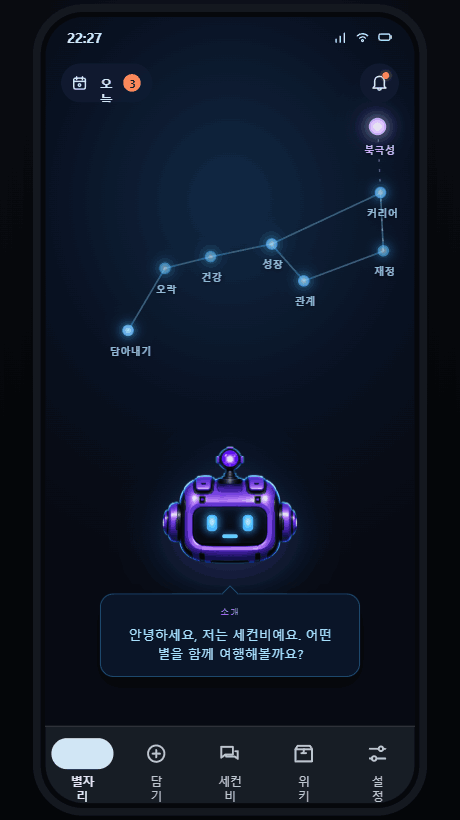
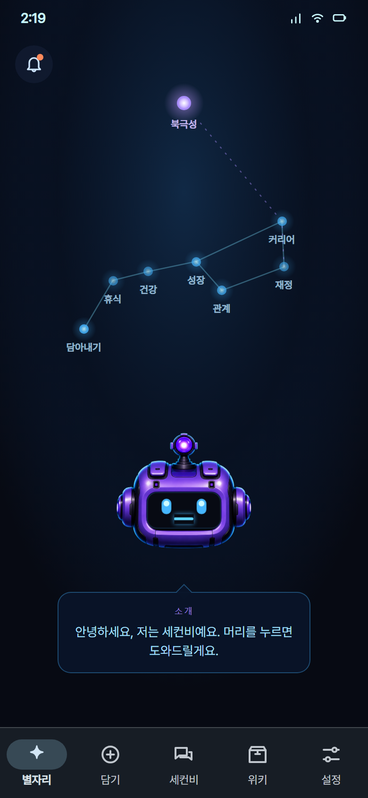
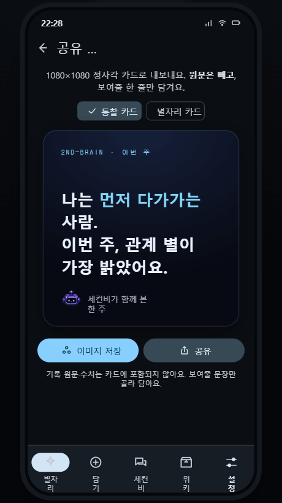
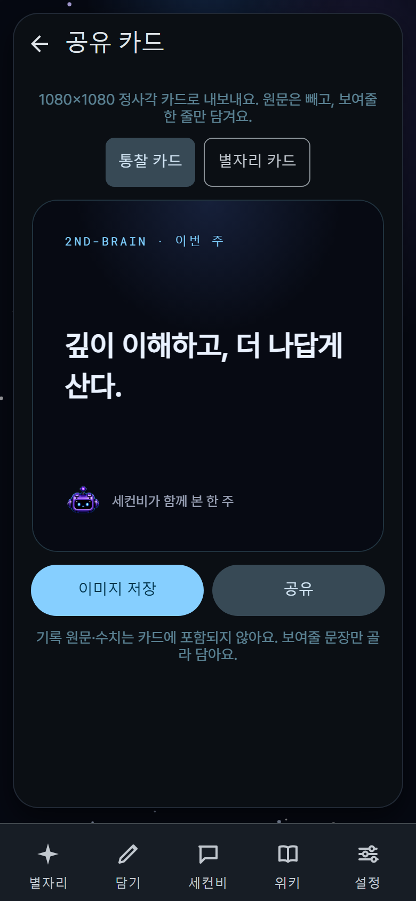

2nd-B · S3 Design Track · Evidence Matrix
디자인 전수 감사와 스타일 개선 판정
발주 기준 da6be790에서 리즈닝 A~F, rev2 화면 인벤토리, 현행 앱 증거, 신규 캐릭터 에셋과 ZIP 세대를 하나의 판정표로 통합했다.
결론: 전수 목록은 완성됐지만, 최신 화면의 픽셀 승인은 보류다.
새 rev2 ZIP의 캡처는 36장이고
35-exhibit은 제거된 orphan이다. 현행 32장은 2026-07-05 역사 자료이며, 로컬 웹은 기존 광고 모듈 import 오류로 중단됐다. 아래 우선순위는 실행 소스, 정본 ZIP, 역사 캡처를 교차한 위험도이며 fresh 상태 캡처가 필요한 행을 U로 분리했다.
판정 기준과 증거 한계
정본 우선순위
- 날짜가 있는 Simon 결정, PRD v3, CONCEPT, CONSTELLATION-DESIGN, CONSTRAINTS
- 현행 DESIGN과 deep-space 계약
- SHA가 고정된 rev2 ZIP과 scoped reasoning ZIP
- 실행 소스, 캡처, 기존 감사 자료
보이는 7별은 life domain이고, 숨은 검증 construct를 홈 별로 렌더링하지 않는다. Polaris가 항상 가장 지배적이어야 한다.
입력 자료 신선도
- rev2 ZIP: pinned SHA 일치, 82개 파일, 캡처 36장
- reasoning ZIP: pinned SHA 일치, 8개 파일, 실제 patch 파일 없음
screens.json: 57개 항목, 제거 route 4개 포함, overlay 3개 누락- 현행 캡처: 32장, 2026-07-05, da6be790의 승인 증거로 사용 불가
- fresh 증거: GitHub Pages 홈·공지 390×844 한 상태, 마지막 성공 배포본
우선순위와 축 표기 읽는 법
P0 루프 단절 또는 잘못된 화면 정체성, P1 핵심 IA·상태 갭, P2 위계·토큰 갭, P3 마감 차이, U fresh 상태 캡처 없이는 확정 불가, X 폐기·비정본이다.
L레이아웃, T토큰, Y타이포, M모션, A에셋을 뜻한다. 정적 캡처가 모션을 증명하지 못하면 추정하지 않고 미검증으로 남겼다.
대표 화면 교차 증거
아래 이미지는 저장소에 이미 추적된 정본·역사 캡처다. 현재 SHA의 fresh 승인 샷이 아니며, 구조 차이를 빠르게 확인하는 용도로만 쓴다.
{kind=link}

{kind=link}

{kind=link}

{kind=link}

S3-1 · 리즈닝 A~F 정합성
| 화면 | 판정 | 현행 구현 | 시안·정본 대비 갭 | 배정 |
|---|---|---|---|---|
| A | 설정·자동 부분 | 설정 진입, 서버 저장, OFF/ON/고갈, 첫 ON 시트, 주간·보상 분리 | A와 B가 한 화면에 병합. 10분 자동 묶음, 자동 작업 표시, 완료 알림 없음 | [로직필요→S5] |
| B | 자료선택 부분 | 최근 records/sources, checkbox, 최대 5개, empty CTA, 고정 실행 버튼 | 소스 그룹 switch, 추천 기본선택, 홈 preselect, 6번째 선택 안내 없음 | [로직필요→S5] |
| C | 홈 말풍선 부분 | available, automatic, running, depleted와 동일 한도 시트 연결 | 새 자료 수, 자동 예정, completed, error, 결과 검토 알림 없음 | 복수 CTA stack은 S3, 상태는 S5 |
| D | 실행중 부분 | shared window, 2400ms linear orbit, n/m, Back 배경화, 취소 | 명시적 배경 계속 CTA 없음. 자료목록이 남아 one-message 위반. 자동 job 복원과 reduced motion 없음 | [로직필요→S5] |
| E | 결과 비준 핵심 누락 | 제안 복원, 기본선택, 선택만 exactly-once 반영, 미선택 유지 | domain_link만 산출. 밝기, Polaris 문장, persona, 근거, mini constellation, 완료 연출 없음 | [로직필요→S5] |
| F | 한도 시트 거의 정합 | 단일 sheet, 2/7 meter, 월요일 reset, +2/월20, plans, fail-closed gate | 광고 재고 실패 피드백, reduced motion, reasoning 화면의 inline 고갈 카드 중복 | 중복 CTA stack은 S3, 나머지는 S5 |
reasoning ZIP 인벤토리와 supersede 판정
아카이브는 README.md, CLAUDE.md, 디자인 HTML 2개, 구형 web mock 4개로 구성된다. reference/에는 실제 ReasoningScreen·NoticesScreen 구현이 없고 폐기 route가 섞여 있어 공통 shell 복사 대상이 아니다.
원 시안의 일요일 초기화, 광고 1회, 즉시 자동 실행, gradient와 pill은 다음날 승인된 reasoning UX 정본에 의해 월요일 00:00, 광고 +2·월20, 수동 1회 예약, one-graphic로 대체됐다.
S3-2 · 화면 × 5축 갭 매트릭스
검색과 필터는 브라우저 안에서만 동작하며 데이터를 전송하지 않는다. P 표기는 fresh 캡처 전 위험도다.
| # | 화면 | L · 레이아웃 | T · 토큰 | Y · 타이포 | M · 모션 | A · 에셋 | P | 배정 |
|---|---|---|---|---|---|---|---|---|
| 01 | Auth | 현행 캡처 없음 | fresh 미검증 | fresh 미검증 | 전환 미검증 | ref의 root dock·구 head가 auth와 충돌 | U | 재캡처 후 S5/S3 |
| 02 | Onboard | 역사 앱은 영문 1페이지, dots·Next 미노출 | 현행 상태 미검증 | ZIP KO 줄깨짐·본문 겹침 | 페이지 전환 미검증 | 그래픽 상태 후판정 | P1 | 상태 S5, 타이포 S3 |
| 03 | TTFV | 역사 앱 primary 동의 CTA 미렌더 | CTA 위계 미검증 | ZIP 하단 카피 겹침 | handoff 미검증 | 별·head 정합 후판정 | P0 | CTA S5, 간격 S3 |
| 04 | Coach | 현행 캡처 없음, 4단계·Back 미검증 | spotlight 대비 미검증 | 말풍선 미검증 | 단계 전환 미검증 | spotlight·head 미검증 | U | 재캡처 후 분류 |
| 05 | Home | 역사 캡처가 잘못된 /deepspace-home 목업 | deep-space 소스는 정적 검증 | 상태별 카피 후판정 | living 상태 fresh 미검증 | PNG ‘담아내기’와 실행형 ref ‘뮤지엄’ 충돌 | P0 | 제품 결정·route S5 |
| 06 | Capture | 구 캡처는 구조 일부만 근접 | windowed M3 fill 위계 차이 | KO/EN·컴패니언 밀도 차이 | capture 전환 미검증 | SecondB 밀도 후판정 | P1 | skin S3, 상태 S5 |
| 07 | SecondB Chat | 튜토리얼 dialog가 기본 상태를 가림 | 낮은 대비·outline 위계 | 영문·라벨 밀도 차이 | 채팅 상태 미검증 | persona 상태 미검증 | P1 | skin S3, 상태 S5 |
| 08 | Records / Wiki | ref는 list+toggle, 구 앱은 장문 list·중복 companion | 현행 graph shell 후판정 | 목록 밀도 후판정 | list↔graph 미검증 | 그래프 구조 소스 존재 | P1 | fresh 후 S3/S5 |
| 09 | Settings | ref 직접 토글, 앱 링크 허브 | outline card 위계 차이 | 영문·그룹 밀도 차이 | 진입 전환 후판정 | link cloud는 ref와 다른 구조 | P1 | IA S5, skin S3 |
| 10 | Polaris | stale PNG, 실행형은 PersonaDeck·검증 허브 | dim placeholder와 상태 불일치 | 빈 상태 위계 후판정 | deck 전환 미검증 | Polaris 우위 fresh 미검증 | U | 데이터 상태 후 재감사 |
| 11 | Domain Star | stale PNG, 실행형 full timeline과 sparse 앱 상태 불일치 | 상태별 밝기 후판정 | 밀도 후판정 | drilldown 미검증 | 도메인 별 우위 규칙 후판정 | U | 상태 S5, 밀도 S3 |
| 12 | Record Detail | 현행 캡처 없음 | 연결·태그 surface 미검증 | 원문 가독성 미검증 | 편집·이동 미검증 | 44dp 포함 fresh 필요 | U | 재캡처 후 분류 |
| 13 | Interview | ref 질문 1/5, 앱 시기 선택 pre-step | 서로 다른 상태 | 질문 화면 미검증 | 단계 전환 미검증 | 상태 에셋 후판정 | U | 흐름·state S5 |
| 14 | Big Five | ref 결과, 앱 empty gate | empty CTA 대비 후판정 | 상단 ‘밝아짐’과 본문 ‘still dark’ 모순 | 결과 전환 미검증 | 결과 별 상태 불일치 | P1 | state·copy S5 |
| 15 | Attachment | ref 결과 사분면, 앱 intro | mint primary가 3색 계약과 충돌 | 상태별 위계 후판정 | 결과 전환 미검증 | 결과 그래픽 미검증 | P2 | token S3, state S5 |
| 16 | Values | ref 결과 랭킹, 앱 intro | shell·CTA는 근접 | 결과 랭킹 미검증 | 결과 전환 미검증 | 막대 상태 불일치 | U | state S5, style 후판정 |
| 17 | Audit | ref 인생시기 timeline, 앱 work-growth 빈 domain | 비교 대상 정체성 다름 | 후판정 | 후판정 | timeline 미노출 | P1 | IA·route S5 |
| 18 | Trend | ref 8주 밝기 차트, 앱 키워드 빈도 카드 | 구성 자체 다름 | 차트 라벨 후판정 | 차트 전환 미검증 | 별별 bar·이력 누락 | P1 | 데이터·구성 S5 |
| 19 | Motivation | ref 결과, 앱 intake, 현 소스 result 분기 존재 | 노후 캡처로 확정 불가 | 결과 밀도 후판정 | 분기 전환 미검증 | 결과 그래픽 후판정 | P1 | fresh 후 style S3 |
| 20 | Strengths | ref Top3 결과, 앱 intake, 현 소스 result 분기 존재 | 노후 캡처로 확정 불가 | 결과 밀도 후판정 | 분기 전환 미검증 | 스펙트럼 후판정 | P1 | fresh 후 style S3 |
| 21 | North Star | ref 현재문장+3제안, 앱 confirmed empty | outline·낮은 밀도 | 빈 상태 위계 후판정 | 제안 전환 미검증 | 같은 IA, 다른 데이터 상태 | U | seed S5, card S3 |
| 22 | Ratify | ref 제안 4행동+근거+undo, 앱 로그 중심 | raw amber literal 1건 | 행동 위계 후판정 | undo 미검증 | 제안 모델 상태 제약 | P1 | model S5, token S3 |
| 23 | IDEN | 구 캡처 2행, 현 소스 4행으로 개선 | #FFFFFF literal 1건 | 밀도 fresh 후판정 | toggle 미검증 | 구조는 가장 근접 | P2 | fresh 후 token S3 |
| 24 | Ops | ref progress·분석·4도구, 앱 empty routines | filled 위계 후판정 | 도구 라벨 후판정 | 루틴 전환 미검증 | 도구 상태 누락 | P1 | module·state S5 |
| 25 | Focus | ref preset·귀속·reset·요약, 앱 timer+play | ring 위계 후판정 | 요약 타입 후판정 | timer만 부분 검증 | controls·state 누락 | P1 | controls S5, ring S3 |
| 26 | Reminders | ref filled list, 앱 empty dead-end | empty 스타일 후판정 | CTA·privacy 안내 없음 | add 흐름 미검증 | 동등 상태 아님 | U | add path S5 |
| 27 | Inbox | ref action feed, 앱 sorting tray | 화면 정체성 다름 | 라벨도 다른 모델 | 행동 흐름 미검증 | feed 자산 미노출 | P1 | IA·route S5 |
| 28 | Connect | ref privacy+source cards, 앱 assistant/capture 설정 | M3 fill 차이 | 약속 카드 누락 | 연동 흐름 미검증 | 기능은 초과, 구조 다름 | P2 | consent S5, skin S3 |
| 29 | Import | ref file/account dropzone, 앱 markdown paste | 밀도 차이 | 3개 약속 문구 누락 | file 흐름 미검증 | 무관한 companion toast 잔존 | P1 | flow S5, density S3 |
| 30 | Data Review | ref confidence/evidence/delete, 앱 저장량 허브 | view 정체성 다름 | 근거·confidence 누락 | delete 흐름 미검증 | 파생 신호 모델 미노출 | P1 | model·view S5 |
| 31 | Call Rec | ref on-device recording, 앱 수기 after-call | 제품 pivot 여부 미결정 | 비교 보류 | 녹음 흐름 미검증 | native capability 미노출 | P1 | 제품 결정 S5 |
| 32 | Share | 구조·비율 거의 동일 | card density 차이 | KO/EN·세부 위계 | 공유 전환 미검증 | 핵심 에셋 이슈 없음 | P3 | fresh 후 S3 |
| 33 | Plans | 3-tier·정직성 note·primary 위계 근접 | 카드 밀도 차이 | KO/EN 차이 | 선택 전환 미검증 | 핵심 에셋 이슈 없음 | P3 | fresh 후 S3 |
| 34 | Museum | stale PNG, 실행형 ref와 앱은 timeline 골격 | 현 renderer raw color 다수 | 축·node label 후판정 | pan·zoom fresh 미검증 | 데이터·interaction 상태 필요 | U | token S3, state S5 |
| 35 | Exhibit | 새 ZIP에 파일 없음 | 비정본 | 비정본 | 비정본 | 기존 tracked PNG는 orphan | X | 목록에서 legacy 표시 |
| 36 | Imagine | 확장·반전·연결 3갈래가 사실상 동일 | spacing 마감 | KO/EN·타입 마감 | 분기 전환 미검증 | 핵심 에셋 이슈 없음 | P3 | fresh 후 S3 |
| 37 | Widget | 현행 캡처 없음 | native surface 미검증 | home·lock·notification 미검증 | native 전환 미검증 | 실 capability 미검증 | U | 기능·fresh S5 |
S3-4 · 신규 8개 에셋 판정
| 에셋 | 판정 | 정본·기술 근거 | 실행 영향 |
|---|---|---|---|
| secondb-2nd blank / face | 폐기 | 각각 meta-*와 SHA-256 byte 동일. 2nd-B 정본은 기존 violet secondb-head-* | 실행 참조 0, 잘못된 identity alias |
| secondb-anti blank / face | 폐기 | pinned rev2·실행 참조에 없음. 폐기된 Anti-B 세대 | 실행 참조 0, 현 persona는 Twi-B |
| secondb-meta blank / face | 조건부 채택 | pinned rev2 ZIP과 SHA 동일. 정상 RGBA 1248×1248. alpha IoU 0.93278 | 정적 사용 후보. 동적 swap 전 재출력 필요 |
| secondb-twi blank / face | 조건부 채택 | pinned rev2 ZIP과 SHA 동일. 정상 RGBA 1248×1248. alpha IoU 0.98043 | 정적 사용 후보. 동적 swap 전 재출력 권장 |
현재 RN SecondbHead는 기존 blank body 하나와 persona accent만 사용한다. Meta/Twi body 연결은 [로직필요→S5]이며, 이 PR은 신규 PNG를 커밋하지 않는다.
에셋 경로·세대 부채
DESIGN_INDEX.md의assets/secondb-head-front.png는 실제로 없고 production 경로는assets/deepspace/secondb-head-front.png다.persona-asset-prompts.md는 2nd·Meta·Anti를 안내하지만 실행 정본은 2nd·Meta·Twi다.- landing의 version suffix alias는 canonical front와 같은 blob이다. 새 SoT로 복제하지 않는다.
- 구 premium asset 참조는 legacy branch에만 남겨야 하며 deep-space 정본으로 승격하지 않는다.
S3-5 · 구 ZIP 처분 제안
결정 제안: 복원하지 않음
design/디자인 시안.zip과 design/앱 디자인 및 기능 기획.zip은 2026-06 pixel·구 명칭·구 font 세대다. 현 deep-space 계약과 충돌하며 실행 참조가 없다.
S5가 현재 D 상태를 명시 경로 삭제 커밋으로 마무리하는 것을 권고한다. S3는 삭제·복원을 실행하지 않았다.
보존성 근거
- 구 자료는 Git history에 남는다.
- tracked
design/proto_rev2/**와docs/clone-audit/reference-handoff/**가 검수 근거를 보존한다. - 구↔신 exact 중복은 canonical head blob 하나뿐이다.
- 24MB 신 ZIP은 지시대로 untracked 유지한다.
S3-3 · 적용한 스타일-only 수정
리즈닝 소진 카드
reasoning.tsx의 depletedActions를 row에서 column으로 변경했다. 390px에서 보상·플랜 CTA가 서로 폭을 경쟁하지 않는다.
홈 리즈닝 말풍선
ConstellationHome.tsx의 bubbleActions를 column으로 변경했다. 긴 KO/EN CTA의 한 줄 잘림을 줄이고 48px 기본 touch target을 유지한다.
IDEN target badge
iden.tsx의 순백색 literal을 기존 의미 토큰 m3.color.onPrimary로 치환했다. 명암은 유지하면서 컴포넌트 hex 금지 계약을 회복한다.
StyleSheet 값 3개만 수정했다. 상태, 훅, 데이터, route, i18n key, 카피, src/lib/**는 변경하지 않았다.
S3-6 · 저비용·고임팩트 제안 5건
1. 자연스러움
홈 말풍선에 completed·error를 추가해 실행 후 사용자가 결과 위치를 잃지 않게 한다. [로직필요→S5]
2. 직관성
실행중 화면의 primary를 “백그라운드에서 계속”으로 명시하고 취소는 text action으로 낮춘다. [로직필요→S5]
3. 정보위계
실행중에는 자료 목록을 접고 head+orbit 한 그래픽과 n/m 한 메시지만 남긴다. [로직필요→S5]
4. 자산 일관성
2nd·Meta·Twi manifest와 blank/face alpha alignment 검사를 추가해 identity alias를 차단한다. [빌드도구→S5]
5. 검증 가능성
정본 화면 registry 하나에서 route·overlay·fixture를 생성하고 390×844 상태 캡처를 자동화한다. [QA기반→S5]
S5 배정 요청
- fresh 캡처 차단 해소: 웹의 native 광고 import 경로를 분리한 뒤 QA fixture로 390×844 전수 재캡처한다.
- P0: TTFV primary CTA 루프와 Home 정체성·portal 명칭·실 route를 결정한다.
- 리즈닝: A/B 분리 여부, source group, completed/error, 배경 실행 CTA, E 산출물과 mini constellation을 구현한다.
- registry: 새 ZIP
SCREENS.md를 기준으로 제거 route와 overlay를 정리하고 orphan 35를 legacy 표시한다. - 상태 불일치: 10, 11, 13~21, 24~31, 34, 37은 seeded fixture와 실행 상태로 다시 판정한다.
- 접근성: switch와 domain star의 실제 hit target 44dp, reasoning orbit·head의 reduced motion을 보장한다.
- 에셋: Meta/Twi blank-face를 정렬 재출력하고 persona body wiring을 결정한다.
- 구 ZIP: 두 D 상태를 복원하지 말고 명시 경로 삭제 커밋으로 마무리한다.
검증 상태
정적 범위
StyleSheet 두 값만 변경했으며 scope diff를 확인했다. 금지 영역과 신규 asset·ZIP은 stage하지 않는다.
자동 검증
npm run verify 종료 코드 0. 379개 suite·2,935개 test 통과. lint 0 error·기존 warning 57개. Jest worker teardown 경고는 있었으나 실패는 없다.